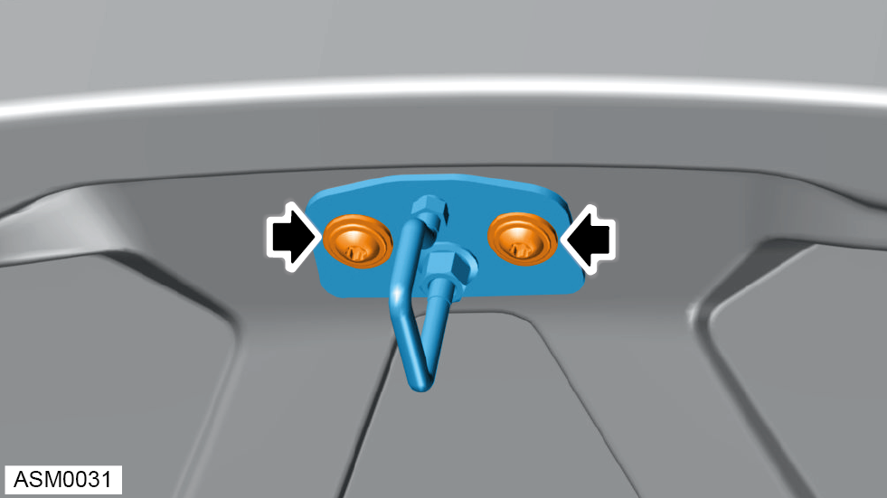

Tailgate Striker
Print
Operation Code: 10.11.03-02
Removal
- Open tailgate.

- Remove M8x25 bolts and washers (x2) securing tailgate striker to tailgate. Torque 25 Nm.
NOTE: To aid installation mark position of tailgate striker to tailgate panel.
NOTE: Always record quantity and fitted position of shims and washers.
- Remove tailgate striker.
Installation
- Installation is the reverse of removal procedure except for the following:
- Install tailgate striker in the correct position. Use position marked during removal procedure.
- After installation check alignment of tailgate striker to tailgate latch.